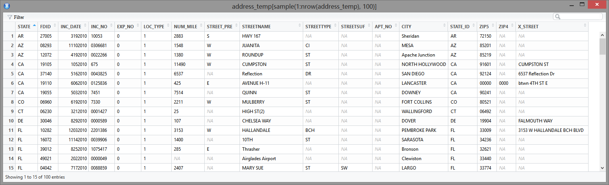
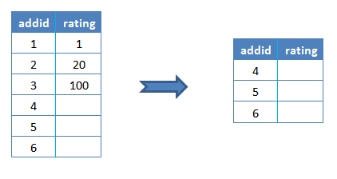
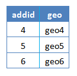
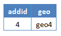
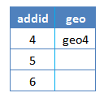
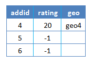
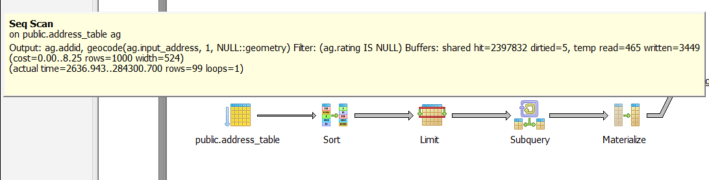
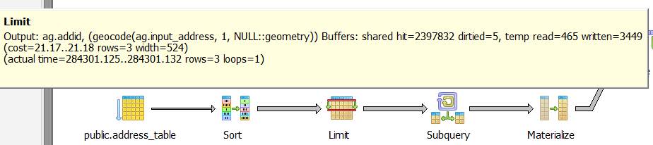
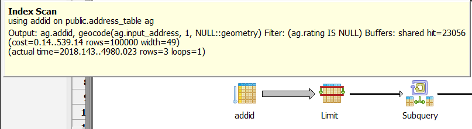
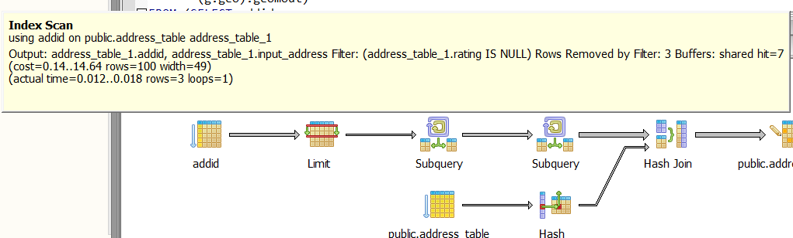

Summary
- I discussed all the problem I met, approaches I tried, and improvement I achieved in the Geocoding task.
- There are many subtle details, some open questions and areas can be improved.
- The final working script and complete workflow are hosted in github.
Introduction
This is the detailed discussion of my script and workflow for geocoding NFIRS data. See background of project and the system setup in my previous posts.
So I have 18 million addresses like this, how can I geocode them into valid address, coordinates and map to census block?

Tiger Geocoder Geocode Function
Tiger Geocoder extension have this geocode function to take in address string then output a set of possible locations and coordinates. A perfect formated accurate address could have an exact match in 61ms, but if there are misspelling or other non-perfect input, it could take much longer time.
Since geocoding performance varies a lot depending on the case and I have 18 millions address to geocode, I need to take every possible measure to improve the performance and finish the task with less hours. I searched numerous discussions about improving performance and tried most of them.
Preparing Addresses
First I need to prepare my address input. Technically NFIRS data have a column of Location Type to separate street addresses, intersections and other type of input. I filtered the addresses with the street address type then further removed many rows that obviously are still intersections.
NFIRS designed many columns for different part of an address, like street prefix, suffix, apt number etc. I concatenate them into a string formated to meet the geocode function expectation. A good format with proper comma separation could make the geocode function’s work much easier. One bonus of concatenating the address segments is that some misplaced input columns will be corrected, for example some rows have the street number in street name column.
There are still numerous input errors, but I didn’t plan to clean up too much first. Because I don’t know what will cause problems before actually running the geocoding process . It will be probably easier to run one pass for one year’s data first, then collect all the formatting errors, clean them up and feed them for second pass. After this round I can use the clean up procedures to process other years’ data before geocoding.
Another tip I found about improving geocoding performance is to process one state at a time, maybe sort the address by zipcode. Because I want the postgresql server to cache everything needed for geocoding in RAM and avoid disk access as much as possible. With limited RAM it’s better to only process similar address at a time. Split huge data file into smaller tasks also make it easier to find problem or deal with exceptions, of course you will need a good batch processing workflow to process more input files.
Someone also mentioned that to standardize the address first, remove the invalid addresses since they take the most time to geocode. However I’m not sure how can I verify the valid address without actual geocoding. Some addresses are obviously missing street numbers and cannot have an exact location, but I may still need the ballpark location for my analysis. They may not be able to be mapped to census block, but a census tract mapping could still be helpful. After the first pass on one year’s data I will design a much more complete cleaning process, which could make the geocoding function’s job a little bit easier.
The PostGIS documentation did mention that the built-in address normalizer is not optimal and they have a better pagc address standardizer can be used. I tried to enable it in the linux setup but failed. It seemed that I need to reinstall postgresql since it is not included in the postgresql setup process of the ansible playbook. The newer version PostGIS 2.2.0 released in Oct, 2015 seemed to have “New high-speed native code address standardizer”, while the ansible playbook used PostgreSQL 9.3.10 and PostGIS 2.1.2 r12389. This is a direction I’ll explore later.
Test Geocoding Function
Based on the example given in geocode function documentation, I wrote my version of SQL command to geocode address like this:
SELECT g.rating,
pprint_addy(g.addy),
ST_X(g.geomout)::numeric(8,5) AS lon,
ST_Y(g.geomout)::numeric(8,5) AS lat,
g.geomout
FROM geocode('2198 Florida Ave NW, Washington, DC 20008', 1) AS g;
- the
1parameter in geocode function limit the output to single address with best rating, since we don’t have any other method to compare all the output. - rating is needed because I need to know the match score for result. 0 is for perfect match, and 100 is for very rough match which I probably will not use.
pprint_addygive a pretty print of address in format that people familiar.geomoutis the point geometry of the match. I want to save this because it is a more precise representation and I may need it for census block mapping.lonandlatare the coordinates round up to 5 digits after dot. The 6th digit will be in range of 1 m. Since most street address locations are interpolated and can be off a lot, there is no point to keep more digits.
The next step is to make it work for many rows instead of just single input. I formated the addresses in R and wrote to csv file with this format:
| row_seq | input_address | zip |
|---|---|---|
| 42203 | 7365 RACE RD , HARMENS, MD 00000 | 00000 |
| 53948 | 37 Parking Ramp , Washington, DC 20001 | 20001 |
| 229 | 1315 5TH ST NW , WASHINGTON, DC 20001 | 20001 |
| 688 | 1014 11TH ST NE , WASHINGTON, DC 20001 | 20001 |
| 2599 | 100 RANDOLPH PL NW , WASHINGTON, DC 20001 | 20001 |
The row_seq is the unique id I assigned to every row so I can link the output back to the original table. zip is needed because I want to sort the addresses by zipcode. Another bonus is that addresses with obvious wrong zipcode will be shown together in beginning or ending of the file. I used the pipe symbol | as the separator of csv because there could be quotes and commas in columns.
Then I can read the csv into a table in postgresql database. The geocode function documentation provided an example to geocode addresses in batch mode, and most discussions in web seemed to be based on this example.
-- only update the first 3 addresses (323-704 ms
-- there are caching and shared memory effects so first geocode you do is always slower)
-- for large numbers of addresses you don't want to update all at once
-- since the whole geocode must commit at once
-- For this example we rejoin with LEFT JOIN
-- and set to rating to -1 rating if no match
-- to ensure we don't regeocode a bad address
UPDATE addresses_to_geocode
SET ( rating, new_address, lon, lat)
= ( COALESCE((g.geo).rating,-1), pprint_addy((g.geo).addy),
ST_X((g.geo).geomout)::numeric(8,5), ST_Y((g.geo).geomout)::numeric(8,5) )
FROM (SELECT addid
FROM addresses_to_geocode
WHERE rating IS NULL ORDER BY addid LIMIT 3) AS a
LEFT JOIN (SELECT addid, (geocode(address,1)) AS geo
FROM addresses_to_geocode AS ag
WHERE ag.rating IS NULL ORDER BY addid LIMIT 3) AS g ON a.addid = g.addid
WHERE a.addid = addresses_to_geocode.addid;
Since the geocoding process can be slow, it’s suggested to process a small portion at a time. The address table was assigned an addid for each row as a index. The code always take the first 3 rows not yet processed (rating column is null) as the sample a to be geocoded.
SELECT addid
FROM addresses_to_geocode
WHERE rating IS NULL ORDER BY addid LIMIT 3) AS a

The result of geocoding g is joined with the addid of the sample a.
LEFT JOIN (SELECT addid, (geocode(address,1)) AS geo
FROM addresses_to_geocode AS ag
WHERE ag.rating IS NULL ORDER BY addid LIMIT 3
) AS g ON a.addid = g.addid

Then the address table was joined with that joined table a-g by addid and corresponding columns were updated.
UPDATE addresses_to_geocode
SET ( rating, new_address, lon, lat)
= ( COALESCE((g.geo).rating,-1), pprint_addy((g.geo).addy),
ST_X((g.geo).geomout)::numeric(8,5), ST_Y((g.geo).geomout)::numeric(8,5) )
FROM
...
WHERE a.addid = addresses_to_geocode.addid;
The initial value of rating column is NULL. Valid geocoding match have a rating number range from 0 to around 100. Some input don’t have valid geocode function return value, which make the rating column to be NULL. Then it was replaced with -1 by the COALESCE function to be separated with the unprocessed rows, so that the next run can skip them.
The join of a and g may seem redundant at first since g already included the addid column. However when some rows has no match and no value is returned by geocode function, g will only have rows with return values.

Joining g with address table will only update these rows by addid. COALESCE function will not take any effect since the empty row addid were not even included. Then the next run will select them again because they still satisfied the sample selection condition, which will mess up the control logic.
Instead joining a and g will have all addid in sample, and the no match rows have NULL in rating column.

The next joining with address table will have the rating column updated correctly by COALESCE function.

This programming pattern is new for me. I think it’s because SQL don’t have the fine grade control of the regular procedure languages, but we still need more control some times so we have this.
Problem With Ill Formated Address
In my experiment with test data I found the example code above often had serious performance problems. It was very similar to another problem I observed: if I run this line with different table sizes, it should have similar performance since it is supposed to only process the first 3 rows.
SELECT geocode(address_string,1)
FROM address_sample LIMIT 3;
Actually it took much, much longer on a larger table. It seemed that it was geocoding the whole table first, then only return the first 3 rows. If I subset the table more explicitly this problem disappeared:
SELECT geocode(sample.address_string, 1)
FROM (SELECT address_string
FROM address_sample LIMIT 3
) as sample;
I modified the example code similarly. Instead of using LIMIT directly in the WHERE clause,
SELECT addid, (geocode(address,1)) AS geo
FROM addresses_to_geocode AS ag
WHERE ag.rating IS NULL ORDER BY addid LIMIT 3
I explicitly select the sample rows then put it in the FROM clause, problem solved.
SELECT sample.addid, geocode(sample.input_address,1) AS geo
FROM (SELECT addid, input_address
FROM address_table WHERE rating IS NULL
ORDER BY addid LIMIT sample_size
) AS sample
Later I found this problem only occurs when the first row of table have invalid address for which the geocode function have no return value. These are the explain analysis results from pgAdmin SQL query tool:
The example code runs on 100 row table on first time, with first row address invalid. The first step of Seq Scan take 284 s (this was on my home pc server running on regular hard drive with all states data, so the performance was bad) to return 99 rows of geocoding result(one row has no match).


While my modified version only processed 3 rows in first step.

After the first row has been processed and marked with -1 in rating, the example code no longer have the problem

If I move the problematic row to the second row, there was no problem either. It seemed that the postgresql planner had some trouble only when the first row didn’t have valid return value. The geocode function authors didn’t find this bug probably because this is a special case, but it’s very common in my data. Because I sorted the addresses by zipcode, many ill formated addresses with invalid zipcode always appear in the beginning of the file.
Making A full Script
To have a better control of the whole process, I need some control structures from PL/pgSQL - sql procedural Language.
First I make the geocoding code as a geocode_sample function with the sample size for each run as parameter.
CREATE OR REPLACE FUNCTION geocode_sample(sample_size integer)
RETURNS void AS $$
BEGIN
...
END;
$$ LANGUAGE plpgsql;
Create or replace make debugging and making changes easier because new version will replace existing version.
Then this main control function geocode_table will calculate the number of rows for whole table, decide how many sample runs it needed to update the whole table, then run the geocode_sample function in a loop with that number. I don’t want to use a conditional loop because if there is something wrong, the code could stuck at some point and have a endless loop. I’d rather just run the code with calculated times then check the table to make sure all rows are processed correctly.
DROP FUNCTION IF EXISTS geocode_table();
CREATE OR REPLACE FUNCTION geocode_table(
OUT table_size integer,
OUT remaining_rows integer) AS $func$
DECLARE sample_size integer;
BEGIN
SELECT reltuples::bigint INTO table_size
FROM pg_class
WHERE oid = 'public.address_table'::regclass;
sample_size := 1;
FOR i IN 1..(SELECT table_size / sample_size + 1) LOOP
PERFORM geocode_sample(sample_size);
END LOOP;
SELECT count(*) INTO remaining_rows
FROM address_table WHERE rating IS NULL;
END
$func$ LANGUAGE plpgsql;
- I used
drop function if existshere because theCreate or replacedoesn’t work if the function return type was changed. - It’s widely acknowledged that calculating row count for a table by
count(*)is not optimal. The method I used should be much quicker if the table statistics is up to date. I used to put a line ofVACUUM ANALYZEafter the table was constructed and csv data was imported, but in every run it reported that no update was needed. It probably because the default postgresql settings made sure the information is up to date right for my case. - In the end I counted the rows not processed yet. The total row number and the remaining row number will be the return value of this function.
The whole PL/pgSQL script is structured like this (actual details inside functions are omitted to have a clear view of whole picture. See complete scripts and everything else in my github repo):
DROP TABLE IF EXISTS address_table;
CREATE TABLE address_table(
row_seq varchar(255),
input_address varchar(255),
zip varchar(255)
);
-- aws version.
COPY address_table FROM :input_file WITH DELIMITER '|' NULL 'NA' CSV HEADER;
-- pc version.
-- COPY address_table FROM 'e:\\Data\\1.csv' WITH DELIMITER ',' NULL 'NA' CSV HEADER;
ALTER TABLE address_table
ADD addid serial NOT NULL PRIMARY KEY,
ADD rating integer,
ADD lon numeric,
ADD lat numeric,
ADD output_address text,
ADD geomout geometry, -- a point geometry in NAD 83 long lat.
--<< geocode function --
CREATE OR REPLACE FUNCTION geocode_sample(sample_size integer)
RETURNS void AS $$
...
END;
$$ LANGUAGE plpgsql;
-- geocode function >>--
--<< main control --
DROP FUNCTION IF EXISTS geocode_table();
CREATE OR REPLACE FUNCTION geocode_table(
OUT table_size integer,
OUT remaining_rows integer) AS $func$
...
END
$func$ LANGUAGE plpgsql;
-- main control >>--
SELECT * FROM geocode_table();
- First I dropped the address table if previously exists, created the table with columns in characters type because I don’t want the leading zero in zipcode lost in converting to integer.
- I have two version of importing csv into table, one for testing in windows pc, another one for AWS linux instance. The SQL
copycommand need the postgresql server user to have permission for the input file, so you need to make sure the folder permission is correct. The linux version used a parameter for input file path. - Then the necessary columns were added to table and the index was built.
- The last line run the main control function and print the return value of it in the end, which is the total row number and remaining row number of input table.
Intersection address
Another type of input is intersections. Tiger Geocoder have a function Geocode_Intersection work like this:
SELECT pprint_addy(addy), st_astext(geomout), rating
FROM geocode_intersection( 'Haverford St','Germania St', 'MA', 'Boston', '02130',1);
It take two street names, state, city and zipcode then output multiple location candidates with ratings. The script of geocoding street addresses only need some minor changes on input table column format and function parameters to work on intersections. I’ll just post the finished whole script for reference after all discussions.
Map to Census Block
One important goal of my project is to map addresses to census block, then we can link the NFIRS data with other public data and produce much more powerful analysis, especially the American Housing Survey(AHS) and the American Community Survey(ACS).
There is a Get_Tract function in Tiger Geocoder which return the census tract id for a location. For census block mapping people seemed to be just using ST_Contains like this answer in stackexchange:
SELECT tabblock_id AS Block,
substring(tabblock_id FROM 1 FOR 11) AS Blockgroup,
substring(tabblock_id FROM 1 FOR 9) AS Tract,
substring(tabblock_id FROM 1 FOR 5) AS County,
substring(tabblock_id FROM 1 FOR 2) AS STATE
FROM tabblock
WHERE ST_Contains(the_geom, ST_SetSRID(ST_Point(-71.101375, 42.31376), 4269))
The national data loaded by Tiger Geocoder have a table tabblock which have the information of census blocks. ST_Contains will test the spatial relationship between two geometries, in our case it will be whether polygon or multi polygon of census block contains the point of interest. The Where clause select the only record that satisfy this condition for the point.
The census block id is a 15 digits code constructed from state and county fips code, census tract id, blockgroup id and the census block number. The code example above actually are not ideal for me since it included all the prefix in each column. My code will work on the results from the geocoding script above:
UPDATE address_table
SET (tabblock_id, STATE, county, tractid)
= (COALESCE(ab.tabblock_id,'FFFF'),
substring(ab.tabblock_id FROM 1 FOR 2),
substring(ab.tabblock_id FROM 3 FOR 3),
substring(ab.tabblock_id FROM 1 FOR 11)
)
FROM
(SELECT addid
FROM address_table
WHERE (geomout IS NOT NULL) AND (tabblock_id IS NULL)
ORDER BY addid LIMIT block_sample_size) AS a
LEFT JOIN (SELECT a.addid, b.tabblock_id
FROM address_table AS a, tabblock AS b
WHERE (geomout IS NOT NULL) AND (a.tabblock_id IS NULL)
AND ST_Contains(b.the_geom, ST_SetSRID(ST_Point(a.lon, a.lat), 4269))
ORDER BY addid LIMIT block_sample_size) AS ab ON a.addid = ab.addid
WHERE a.addid = address_table.addid;
- I didn’t include the state fips as prefix in county fips since strictly speaking county fips is 3 digits, although you always need to use it with state fips together. I included the census tract because some location may have ambiguity but the census tract most likely will be same.
- This code is based on same principle of the geocoding code with a little bit change:
- It need to work on top of geocoding results, so the sample for each run are the rows that have been geocoded (thus geomout column is not
NULL), but not yet mapped to census block (tabblock_idisNULL), and sorted byaddid, limited by sample size. - Similar to geocode code, I need to join the sample
addidwith lookup result to make sure even the rows without return value are included in result. Then theNULLrating value of those rows will be replaced with an special value to mark the row as processed already but without match. This step is critical for the updating process to work properly.
- It need to work on top of geocoding results, so the sample for each run are the rows that have been geocoded (thus geomout column is not
In theory this mapping is much easier than geocoding since there is not much ambiguity. And every address should belong to some census block. Actually I found many street intersections don’t have matches. I tested the same address in the offcial Census website and it find the match!
Here is the example data I used, the geocode_intersection function returned a street address and coordinates from two streets:
row_seq | 2716
street_1 | FLORIDA AVE NW
street_2 | MASSACHUSETTS AVE NW
state | DC
city | WASHINGTON
zip | 20008
addid | 21
rating | 3
lon | -77.04879
lat | 38.91150
output_address | 2198 Florida Ave NW, Washington, DC 20008
I used different test methods and found interesting results:
| input | method | result |
|---|---|---|
| 2 streets | geocode_intersection | (-77.04879, 38.91150) |
| geocode_intersection output address | geocode | (-77.04871, 38.91144) |
| geocode_intersection output address | Census website | (-77.048775,38.91151) GEOID: 110010055001010 |
| geocode_intersection coordinates, 5 digits | Census website | census block GEOID: 110010041003022 |
| geocode_intersection coordinates, 5 digits | Tiger Geocoder | census block GEOID: 110010041003022 |
| geocode_intersection coordinates, 6 digits | Tiger Geocoder | census block: no match |
- If I feed the street address output from
geocode_intersectionback togeocodefunction, the coordinates output will have slight difference with the coordinates output fromgeocode_intersection. My theory is thatgeocode_intersectionfunction first calculate the intersection point from the geometry information of two streets, then reverse geocode that coordinates into street address. The street number is usually interpolated so if you geocode that street address back to coordinates there could be difference. Update: Some interesting background information about the street address locations and ranges. - The slight difference may result in different census block output, probably because these locations are on street intersections which are more than likely to be boundary of census blocks.
- Using the geometry or the coordinates output (6 digits after dot) from
geocode_intersectionforST_Containscould have empty result, i.e. no census block have contain relationship of these points. I’m not sure the reason of this, only observed that using coordinates with 5 digits after dot will find a match in most time. This is an open question need to consulting with the experts on this.
Work In Batch
I was planning to geocode addresses by states to improve the performance, so I’ll need to process lots of files. After some experimentations, I developed a batch workflow:
The script discussed above can take a csv input, geocode addresses, map census block, update the table. I used this psql command line to execute the script. Note I have a .pgpass file in my user folder so I don’t need to write database password in the command line, and I saved a copy of the console messages to log file.
psql -d census -U postgres -h localhost -w -v input_file="'/home/ubuntu/geocode/address_input/address_sample.csv'" -f geocode_batch.sql 2>&1 | tee address.logI need to save the result table to csv. The
Copyin SQL require the postgresql user to have permission for output file, so I used the psql meta command\Copyinstead. It can be written inside the PL/pgSQL script but I cannot make it to use parameter as output file name. So I have to write another psql command line:psql -d census -U postgres -h localhost -w -c '\copy address_table to /home/ubuntu/geocode/address_output/1.csv csv header'The above two lines will take care of one input file. If I put all input files into one folder, I can generate a shell script to process each input file with above command line. At first I tried to use shell script directly to read file names and loop with them, but it became very cumbersome and error prone because I want to generate output file name dynamically from input file names then transfer them as psql command line parameters. I ended up with a simple python script to generate the shell script I wanted.
Before running the shell script I need to change the permission:
chmod +x ./batch.sh sh ./batch.sh
Exception Handling And Progress Report
The NFIRS data have many ill formated addresses that could cause problem for geocode function. I decided that it’s better to process one year’s data first, then collect all the problem cases and design a cleaning procedure before processing other years’ data.
This means the workflow should be able to skip on errors and mark the problems. The script above can handle the cases when there is no match returned from the geocode function, but any exception occurred in runtime will interrupt the script. Since the geocode_sample is called in a loop inside the main control function, the whole script is one single transaction. Once the transaction is interrupted, it will be rolled back and all the previous geocoding results are lost. See more about this.
However, adding an EXCEPTION clause effectively forms a subtransaction that can be rolled back without affecting the outer transaction.
Therefore I added this exception handling part in the geocode_sample function:
CREATE OR REPLACE FUNCTION geocode_sample(sample_size integer)
RETURNS void AS $$
DECLARE OUTPUT address_table%ROWTYPE;
BEGIN
...
EXCEPTION
WHEN OTHERS THEN
SELECT * INTO OUTPUT
FROM address_table
WHERE rating IS NULL ORDER BY addid LIMIT 1;
RAISE NOTICE '<address error> in samples started from: %', OUTPUT;
RAISE notice '-- !!! % % !!!--', SQLERRM, SQLSTATE;
UPDATE address_table
SET rating = -2
FROM (SELECT addid
FROM address_table
WHERE rating IS NULL ORDER BY addid LIMIT sample_size
) AS sample
WHERE sample.addid = address_table.addid;
END;
$$ LANGUAGE plpgsql;
This code will catch any exception, print the first row of current sample to notify the location of error, also print the original exception message.
psql:geocode_batch.sql:179: NOTICE: <address error> in samples started from: (1501652," RIVER (AT BLOUNT CO) (140 , KNOXVILLE, TN 37922",37922,27556,,,,,,,,,)
CONTEXT: SQL statement "SELECT geocode_sample(sample_size)"
PL/pgSQL function geocode_table() line 24 at PERFORM
psql:geocode_batch.sql:179: NOTICE: -- !!! invalid regular expression: parentheses () not balanced 2201B !!!--
To make sure the script will continue work on the remaining rows, it also set the rating column of the current sample to be -2, thus they will be skipped in latter runs.
One catch of this method is the whole sample will be skipped even only one row in it caused problem, then I may need to check them again after one pass. However I didn’t find a better way to find the row caused the exception other than set up some marker for every row and keep updating it. Instead, I tested the performance with different sample size, i.e. how many rows will the geocode_sample function process in one run. It turned out sample size 1 didn’t have obvious performance penalty, maybe because the extra cost of small sample is negligible compared to the geocoding function cost. With a sample size 1 the exception handling code will always mark the problematic row only, and the code is much simpler.
Another important feature I want is progress report. If I split the NFIRS data by state, one state data often has tens of thousands of rows and take several hours to finish. I don’t want to find error or problem until it finishes. So I added some progress report like this:
psql:geocode_batch.sql:178: NOTICE: > 2015-11-18 20:26:51+00 : Start on table of 10845
psql:geocode_batch.sql:178: NOTICE: > time passed | address processed <<<< address left
psql:geocode_batch.sql:178: NOTICE: > 00:00:54.3 | 100 <<<< 10745
psql:geocode_batch.sql:178: NOTICE: > 00:00:21.7 | 200 <<<< 10645
First it report the size of whole table, then the time taken for every 100 rows processed, and how many rows are left. It’s pretty obvious in above example that the first 100 rows take more time. It’s because many address with ill formated zipcode were sorted on top.
Similarly, the mapping of census block have a progress report:
psql:geocode_batch.sql:178: NOTICE: ==== start mapping census block ====
psql:geocode_batch.sql:178: NOTICE: # time passed | address to block <<<< address left
psql:geocode_batch.sql:178: NOTICE: # 00:00:02.6 | 1000 <<<< 9845
psql:geocode_batch.sql:178: NOTICE: # 00:00:03.4 | 2000 <<<< 8845
Summary And Open Questions
I put everything in this Github repository.
My script has processed almost one year’s data, but I’m not really satisfied with the performance yet. When I tested the 44185 MD, DC addresses in the AWS free tier server with MD, DC database, the average time per row is about 60 ms, while the full server with all states have the average time of 342 ms. Some other states with more ill formated addresses have worse performance.
I have updated the Tiger database index and tuned the postgresql configurations. I can try parallel but the cpu should not be the bottle neck here, and the hack I found to enable postgresql run parallel is not easily manageable. Somebody also mentioned partitioning database, but I’m not sure if this will help.
And here are some open questions I will ask in PostGIS community, some of them may have the potential to further improve performance:
Why is a server with 2 states data much faster than the server with all states data? I assume it’s because the bad address that don’t have a exact hit at first will cost much more time when the geocoder checked all states. With only 2 states this search is limited and stopped much early. This can be further verified by comparing the performance of two test cases in each server, one with exact match perfect address, another one with lots of invalid addresses.
There is a
restrict_regionparameter ingeocodefunction looks promising if it can limit the search range, since I have enough information or reason to believe the state information is correct. I wrote a query trying to use one state’s geometry as the limiting parameter:SELECT geocode('501 Fairmount DR , Annapolis, MD 20137', 1, the_geom) FROM tiger.state WHERE statefp = '24';and compared the performance with the simple version
SELECT geocode('501 Fairmount DR , Annapolis, MD 20137',1);I didn’t find performance gain with the parameter. Instead it lost the performance gain from caching, which usually came from running same query immediately again because all the needed data have been cached in RAM.
Maybe my usage is not proper, or this parameter is not intended to work as I expected. However if the search range can be limited, the performance gain could be substantial.
Will normalizing address first improve the performance? I don’t think it will help unless I can filter bad address and remove them from input totally, which may not be the case for my usage of NFIRS data. The new PostGIS 2.2.0 looks promising but the ansible playbook is not updated yet, and I haven’t have the chance to setup the server again by myself.
One possible improvement to my workflow is to try to separate bad formatted addresses with the good ones. I already separated some of them by sorting by zipcode, but there are some addresses with a valid zipcode are obviously incomplete. The most important reason of separate all input by state is to have the server cache all the data needed in RAM. If the server meet some bad formatted addresses in the middle of table and started to look up all states, the already loaded whole state cache could be messed up. Then the good addresses need the geocoder to read state data from hard drive again. If the cache update statistics could be summarized from the server log, this theory can be verified.
I’ve almost finished one year’s data. After it finished I’ll design more clean up procedures, and maybe move all suspicious addresses out to make sure the better shaped addresses geocoding are not interrupted.
Will replacing the default normalizing function with the Address Standardizer help? I didn’t find the normalizing step too time consuming in my experiments. However if it can produce better formated address from bad input, that could help the geocoding process.
- Why 6 digits coordinates of street intersections output often don’t have matched census block, but coordinates round up to 5 digits have match in most of time?
Version History
- 2015-11-19 : First version.
- 2016-05-11 : Added Summary.